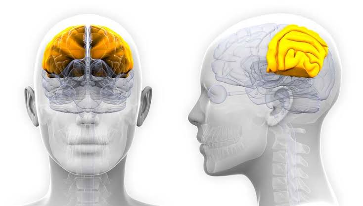

El Lóbulo Parietal
1. Funciones Principales
El lóbulo parietal ocupa cerca de un cuarto de los hemisferios cerebrales y tiene dos funciones principales:
- Sensibilidad y percepción.
- Integración e interpretación de la información sensitiva, en especial de los campos visuales.
Es responsable tanto de integrar la información sensitiva que ingresa creando una única percepción, como de
formar un sistema de coordenadas espaciales para representar nuestro entorno. Una lesión en este lóbulo
puede provocar diversas manifestaciones clínicas, como la incapacidad de comprender las relaciones
espaciales.

2. Ubicación y Límites
Se encuentra debajo del hueso parietal, entre el lóbulo frontal y el lóbulo occipital, y superior al lóbulo
temporal en cada hemisferio del cerebro:
- Borde anterior: Formado por el surco central (de Rolando).
- Borde posterior: Formado por una línea imaginaria que se extiende entre el surco parietooccipital
(superiormente) y la incisura preoccipital (inferiormente).
- Borde inferior: Formado por el surco lateral (de Silvio).
- Borde superior: Formado por la fisura longitudinal cerebral que separa ambos hemisferios.
3. Surcos y Giros
El lóbulo parietal presenta diversas estructuras en su anatomía:
- Giro postcentral: Delimitado por el surco central y el surco postcentral (que corre casi paralelo
al surco central).
- Lóbulos parietales superior e inferior: Divididos por el surco intraparietal, el cual se origina
aproximadamente en el punto medio del surco postcentral y se extiende hacia posterior, paralelo a la
fisura longitudinal cerebral.
- Lóbulo parietal inferior: Continúa hacia la intersección parietotemporal y está formado por:
- Giro supramarginal: Tiene forma de “U” y rodea el extremo posterior del surco lateral.
- Giro angular: Se encuentra en el extremo posterior del surco temporal superior.
- Estructuras en la cara medial:
- Porción posterior del lóbulo paracentral: Delimitada por el surco precentral hacia
anterior y por el surco marginal hacia posterior.
- Precuña: Ubicada justo posterior al lóbulo paracentral, extendiéndose desde el surco
supramarginal hasta el surco parietooccipital.
4. Histología
- Áreas sensitivas primarias (ej. Giro postcentral): Presentan una histología de
tipo granular. Las 6 capas normales de la corteza no son evidentes, ya que las capas II
y IV contienen predominantemente células granulares sensitivas (capa granular externa e
interna) y son mucho más pronunciadas que las capas III y V (capa piramidal externa e
interna con células piramidales motoras).
- Áreas corticales de asociación: Presentan las seis capas celulares normales de la
corteza.
|
5. Irrigación Sanguínea
El flujo sanguíneo del lóbulo parietal proviene de tres arterias principales:
- Arteria cerebral media (rama de la carótida interna): Irriga la cara lateral.
- Arteria cerebral anterior (rama de la carótida interna): Irriga la cara medial.
- Arteria cerebral posterior: Irriga la cara posterior del lóbulo parietal medial.